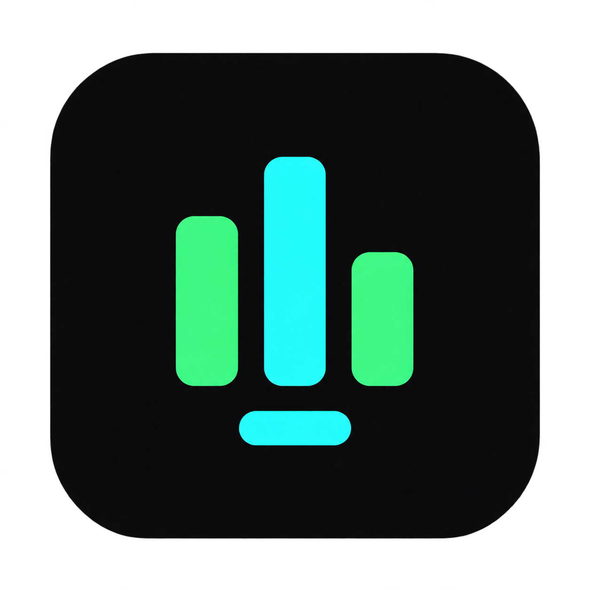

Tu biblioteca local
La base del proyecto reproduce audio y video locales, con una cola compartida y controles de reproducción.

AURA COMMUNITYWINDOWS 10 / 11 · COMMUNITY 0.1.1
Una nueva etapa para Aura Player. Community nace como un proyecto independiente de reproductor multimedia para quienes disfrutan su colección local.
Windows x64 · Versión 0.1.1 · 53 MB · Sin firma digital. Versión preliminar de prueba. Descarga pública, sin iniciar sesión. Windows puede mostrar advertencias al ejecutar el instalador porque aún no tiene firma digital.

HECHO PARA ESCUCHAR
La base del proyecto reproduce audio y video locales, con una cola compartida y controles de reproducción.
Desarrollada en Go con Gio. Visualización de audio y apariencias personalizables forman parte de la base actual.
Un repositorio propio para seguir los cambios, consultar el código y comunicar problemas o propuestas.
TRANSPARENCIA DESDE EL INICIO
El instalador de Windows se generó y validó en Windows y pasó las pruebas automáticas y la verificación de instalación aislada. La versión preliminar ya está publicada para pruebas y puede descargarse sin una cuenta de GitHub. El instalador todavía no tiene firma digital.
Consultar versiones ↗Orientada inicialmente a Windows 10 y 11. Los requisitos definitivos se publicarán con la primera versión.
Software libre bajo GNU GPL versión 3 únicamente (GPL-3.0-only). GNU GPLv3 es una licencia aprobada por la Open Source Initiative (OSI). Puedes usarlo, modificarlo y redistribuirlo, manteniendo la licencia y facilitando las fuentes correspondientes al distribuir versiones derivadas.
Consultar licencia vigente ↗ · Aprobación OSI de GPLv3 ↗Aura Player comercial nació primero. Community se derivó de su base original y después adoptó GPL-3.0-only. Ambas ediciones comparten autor e historia inicial; actualmente mantienen repositorios y distribución separados. La edición comercial conserva su propia licencia.
PREGUNTAS FRECUENTES
El botón principal descarga Aura-Player-Community-Setup-0.1.1.exe, el instalador para Windows x64. El archivo Portable .zip es una alternativa. La versión preliminar es pública y no requiere iniciar sesión en GitHub. Descarga el .exe y ejecútalo para instalar Community.
Sí. GPL-3.0-only permite modificar y redistribuir el código, también comercialmente, cumpliendo sus condiciones de copyleft y entrega del código fuente correspondiente. Los componentes de terceros conservan sus licencias.
Utiliza los Issues del repositorio Community. Incluye tu versión de Windows y los pasos para reproducir el problema.
CON CARIÑO
Aurora, tú fuiste quien me motivó a crear este proyecto. Te quiero y siempre espero que estés bien.
Con amor, papá.